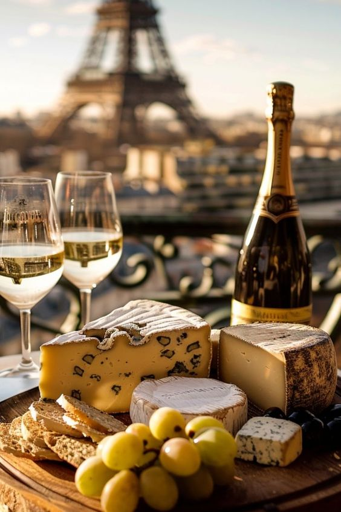

French culture is a rich tapestry woven from history, art, cuisine, and a deep appreciation for the finer things in life.
From the romantic streets of Paris, adorned with charming cafés and iconic landmarks like the Eiffel Tower, to the picturesque villages of Provence, where lavender fields bloom, every corner of France tells a story.
Culinary Culture
Culinary traditions are a cornerstone of French culture, emphasizing fresh, local ingredients and the art of cooking as a form of expression.
Classic dishes like coq au vin, bouillabaisse, and ratatouille reflect the rich flavors and techniques passed down through generations.
The importance of terroir is highlighted through the country’s world-famous cheese and wine, making dining a social ritual where meals are savored slowly, allowing for conversation and connection.

Artistic Culture
French artistic culture has had a profound influence on the world, shaping movements in visual arts, literature, and music.
Home to legendary artists such as Claude Monet and Edgar Degas, France established itself as a global art capital with the Impressionist movement, which transformed the art landscape.
Literature thrives with iconic writers like Victor Hugo and Simone de Beauvoir, exploring complex themes of identity and society. The country’s commitment to preserving its artistic heritage is evident in renowned museums like the Louvre and Musée d'Orsay, which showcase masterpieces that continue to inspire creativity and innovation.
Together, these elements embody a zest for life that captivates and inspires people worldwide.